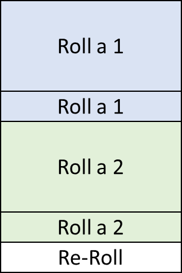

This is a method that you have probably used before. If you want to roll a die which evenly divides into yours, just divide the numbers on your die into equal groups. This can be done by grouping adjacent numbers together or using the modulo operator (the remainder after dividing). For a D20, this can be done for a D2, D4, D5, or D10.
| D2 | |
|---|---|
| D2 Roll | D20 Roll |
| 1 | 1, 2, 3, 4, 5, 6, 7, 8, 9, 10 |
| 2 | 11, 12, 13, 14, 15, 16, 17, 18, 19, 20 |
| D4 | |
|---|---|
| D4 Roll | D20 Roll |
| 1 | 1, 2, 3, 4, 5 |
| 2 | 6, 7, 8, 9, 10 |
| 3 | 11, 12, 13, 14, 15 |
| 4 | 16, 17, 18, 19, 20 |
| D5 | |
|---|---|
| D5 Roll | D20 Roll |
| 1 | 1, 2, 3, 4 |
| 2 | 5, 6, 7, 8 |
| 3 | 9, 10, 11, 12 |
| 4 | 13, 14, 15, 16 |
| 5 | 17, 18, 19, 20 |
| D10 | |
|---|---|
| D10 Roll | D20 Roll |
| 1 | 1, 2 |
| 2 | 3, 4 |
| 3 | 5, 6 |
| 4 | 7, 8 |
| 5 | 9, 10 |
| 6 | 11, 12 |
| 7 | 13, 14 |
| 8 | 15, 16 |
| 9 | 17, 18 |
| 10 | 19, 20 |
| D2 | |
|---|---|
| D2 Roll | D20 Roll |
| 1 | 1, 3, 5, 7, 9, 11, 13, 15, 17, 19 |
| 2 | 2, 4, 6, 8, 10, 12, 14, 16, 18, 20 |
| D4 | |
|---|---|
| D4 Roll | D20 Roll |
| 1 | 1, 5, 9, 13, 17 |
| 2 | 2, 6, 10, 14, 18 |
| 3 | 3, 7, 11, 15, 19 |
| 4 | 4, 8, 12, 16, 20 |
| D5 | |
|---|---|
| D5 Roll | D20 Roll |
| 1 | 1, 6, 11, 16 |
| 2 | 2, 7, 12, 17 |
| 3 | 3, 8, 13, 18 |
| 4 | 4, 9, 14, 19 |
| 5 | 5, 10, 15, 20 |
| D10 | |
|---|---|
| D10 Roll | D20 Roll |
| 1 | 1, 11 |
| 2 | 2, 12 |
| 3 | 3, 13 |
| 4 | 4, 14 |
| 5 | 5, 15 |
| 6 | 6, 16 |
| 7 | 7, 17 |
| 8 | 8, 18 |
| 9 | 9, 19 |
| 10 | 10, 20 |
This application uses the modulo method.
This method is definitely the most jank. You just re-roll the die until you get a number below or equal to your target die. This will work to approximate any lower die, not just one that divides evenly into a D20. The catch is that, the lower number you target, the more times you'll have to re-roll.
It does! And I can prove it. For the sake of clarity, I'll use a D3 to approximate a D2.
When you roll a D3, there are three possible, equally-weighted outcomes:
If you get a 1 or a 2, you stop there. Those are the possible values of a D2. If you get a 3, you re-roll and have the same possible outcomes:
One third of those outcomes results in a 1 and another third results in a 2 and we'll stop rolling after that. So now, we have 1/3 + 1/9 chance to get a 1 and 1/3 + 1/9 chance to get a 2.
There's also now a 1/9 chance after 1 potential re-roll that we have to re-roll again. The same logic applies. 2/3 of the possible values of that third re-roll give us a 1 or a 2.
As the number of re-rolls increases, the chance of not getting a 1 or a 2 diminishes to 0. The chances of getting a 1 or a 2 are equally weighted, so they both approach 50%.
This works for any fair die as long as the die being approximated is lower. [1]
If you've ever rolled percentile dice (D100), you've used this method. Normally, this would look something like the following way of interpreting two D10 rolls:
| 1 | 2 | 3 | 4 | 5 | 6 | 7 | 8 | 9 | 10 | |
| 1 | 11 | 12 | 13 | 14 | 15 | 16 | 17 | 18 | 19 | 10 |
| 2 | 21 | 22 | 23 | 24 | 25 | 26 | 27 | 28 | 29 | 20 |
| 3 | 31 | 32 | 33 | 34 | 35 | 36 | 37 | 38 | 39 | 30 |
| 4 | 41 | 42 | 43 | 44 | 45 | 46 | 47 | 48 | 49 | 40 |
| 5 | 51 | 52 | 53 | 54 | 55 | 56 | 57 | 58 | 59 | 50 |
| 6 | 61 | 62 | 63 | 64 | 65 | 66 | 67 | 68 | 69 | 60 |
| 7 | 71 | 72 | 73 | 74 | 75 | 76 | 77 | 78 | 79 | 70 |
| 8 | 81 | 82 | 83 | 84 | 85 | 86 | 87 | 88 | 89 | 80 |
| 9 | 91 | 92 | 93 | 94 | 95 | 96 | 97 | 98 | 99 | 90 |
| 10 | 1 | 2 | 3 | 4 | 5 | 6 | 7 | 8 | 9 | 100 |
The method this application uses will produce a table that looks like this:
| 1 | 2 | 3 | 4 | 5 | 6 | 7 | 8 | 9 | 10 | |
| 1 | 1 | 2 | 3 | 4 | 5 | 6 | 7 | 8 | 9 | 10 |
| 2 | 11 | 12 | 13 | 14 | 15 | 16 | 17 | 18 | 19 | 20 |
| 3 | 21 | 22 | 23 | 24 | 25 | 26 | 27 | 28 | 29 | 30 |
| 4 | 31 | 32 | 33 | 34 | 35 | 36 | 37 | 38 | 39 | 40 |
| 5 | 41 | 42 | 43 | 44 | 45 | 46 | 47 | 48 | 49 | 50 |
| 6 | 51 | 52 | 53 | 54 | 55 | 56 | 57 | 58 | 59 | 60 |
| 7 | 61 | 62 | 63 | 64 | 65 | 66 | 67 | 68 | 69 | 70 |
| 8 | 71 | 72 | 73 | 74 | 75 | 76 | 77 | 78 | 79 | 80 |
| 9 | 81 | 82 | 83 | 84 | 85 | 86 | 87 | 88 | 89 | 90 |
| 10 | 91 | 92 | 93 | 94 | 95 | 96 | 97 | 98 | 99 | 100 |
This helps illustrate the next point, which is that, when you roll two dice, the number of outcomes you get is equal to the product of each of their values (e.g. 10x10=100). We can divides these outcomes any way we like and assign them the outcomes of a die with the product of their values. For example, we can approximate a D20 with a D5 and a D4:
| 1 | 2 | 3 | 4 | 5 | |
| 1 | 1 | 2 | 3 | 4 | 5 |
| 2 | 6 | 7 | 8 | 9 | 10 |
| 3 | 11 | 12 | 13 | 14 | 15 |
| 4 | 16 | 17 | 18 | 19 | 20 |
Usually, when we roll two dice, we add the results. This will lead to unequal distributions because multiple different rolls of the dice can add to the same value. In this case, we're not adding the results, we're using the dice to look up values in the table we made. Think of one die as the column die and one as the row die. We can even perform this lookup in higher dimensions. We can use a D4 and 2D5s to approximate a D100.
| 1 | |||||
|---|---|---|---|---|---|
| 1 | 2 | 3 | 4 | 5 | |
| 1 | 1 | 2 | 3 | 4 | 5 |
| 2 | 6 | 7 | 8 | 9 | 10 |
| 3 | 11 | 12 | 13 | 14 | 15 |
| 4 | 16 | 17 | 18 | 19 | 20 |
| 5 | 21 | 22 | 23 | 24 | 25 |
| 2 | |||||
|---|---|---|---|---|---|
| 1 | 2 | 3 | 4 | 5 | |
| 1 | 26 | 27 | 28 | 29 | 30 |
| 2 | 31 | 32 | 33 | 34 | 35 |
| 3 | 36 | 37 | 38 | 39 | 40 |
| 4 | 41 | 42 | 43 | 44 | 45 |
| 5 | 46 | 47 | 48 | 49 | 50 |
| 3 | |||||
|---|---|---|---|---|---|
| 1 | 2 | 3 | 4 | 5 | |
| 1 | 51 | 52 | 53 | 54 | 55 |
| 2 | 56 | 57 | 58 | 59 | 60 |
| 3 | 61 | 62 | 63 | 64 | 65 |
| 4 | 66 | 67 | 68 | 69 | 70 |
| 5 | 71 | 72 | 73 | 74 | 75 |
| 4 | |||||
|---|---|---|---|---|---|
| 1 | 2 | 3 | 4 | 5 | |
| 1 | 76 | 77 | 78 | 79 | 80 |
| 2 | 81 | 82 | 83 | 84 | 85 |
| 3 | 86 | 87 | 88 | 89 | 90 |
| 4 | 91 | 92 | 93 | 94 | 95 |
| 5 | 96 | 97 | 98 | 99 | 100 |
Ô∏è‚òùÔ∏èü§ì The fundamental theorem of arithmetic [2] states that any integer greater than one can be represented as a unique product of lower prime numbers. This means that we can approximate any die that we have the factors for. In the previous section, we showed that we can approximate all the dice smaller than a d20. So, we can multiply to any die whose prime factors are all less than or equal to than 20. For example:
D400: Multiply(D20, D20)

D100: Multiply(D20, Factor(D20, D5))
D30: Multiply(Factor(D20, D2), Reroll(D20, D15))
There are some dice we can't approximate just by multiplying together dice that are less than 20. For example, 23 is a prime number. We can't multiply any other dice to make a D23. Luckily, we can use a combination of all the methods we've discussed to approximate any die.
For example, Reroll(Factor(D20, D10), D6)
This case is not as simple. Below is pseudo-code for finding good paths from 21-10000.
for each integer i from 21 to 10000:
let factors = factorsOf(i)
let cheapestApproximation
// Check the costs of multiplying each pair of factors
for each unique pair of factors in factors:
check the approximate number of rolls needed to multiply this pair
if it's less than cheapestApproximation.cost:
cheapestApproximation = the approximation of multiplying these dice
// Next, see if rerolling this die makes a lesser die cheaper.
for each integer n where n < i
check the number of rolls to reroll this die
if it's cheaper than approximation[n].cost:
approximation[n] = reroll(i, n)
Essentially, each die is first approximated via the multiplication method. Once we get to higher dice, these can be checked to reroll a lower die.
I woke up one morning and found that the devil had visited me in the night and bade me to make this.
It took more than 24 hours of coding and when I wasn't coding, I was thinking about how to do it.
It is completely useless.
It is my magnum opus.